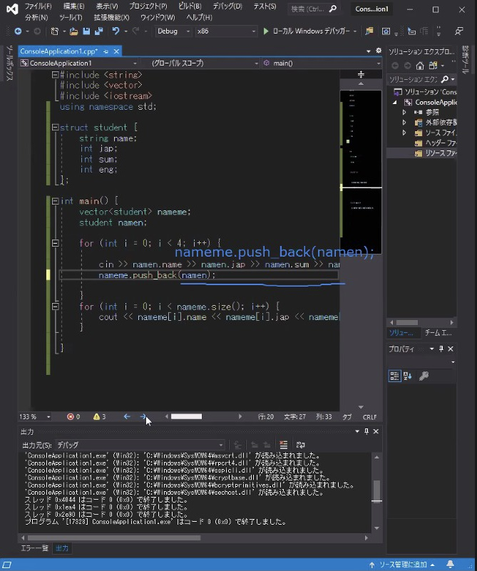
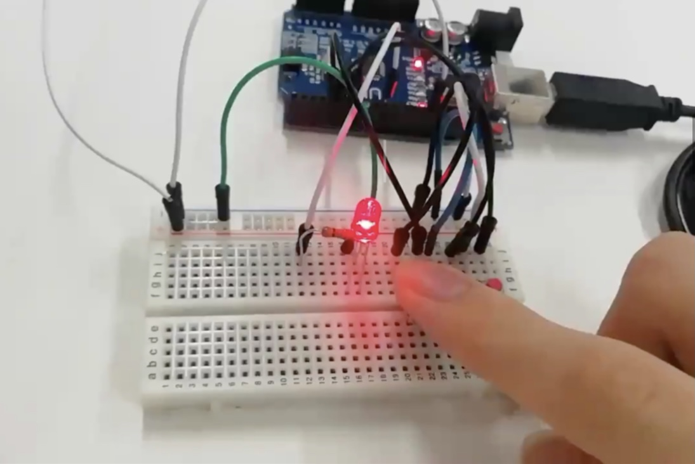

KHEC部活動報告
2020-09
2020年9月発行の部報では昨年度の活動報告や新年度の活動予定、新情報を掲載しています。
４月～６月までの自粛期間中は家での活動となり、最大週4日でテレワークを行いました。部内での情報共有も中々難しい状況ではありましたが、家でも備品等があれば活動はできるので各自で作業を行うこととなりました。
この自粛期間中に、Arduino、C言語、Unity、HTML/CSSの講座が開かれました。
部員同士が様々な知識を共有することができ、とても有意義な時間となりました。
また、７月に入るとすぐに1年生の部活見学が始まるので、新入生への部活説明会のプレゼン資料制作も並行して行いました。
新入生歓迎会では、部員一人一人の自己紹介や普段の活動内容のプレゼンを行い、実際に制作した物の発表も行いました。
その後、上級生と新入生がペアを組み、Arduino講座を行いました。
8月には新入生を対象にArduino習熟度テストが行われ、合格点以下の生徒は再試を受けました。
テストが終わると新入生も活動班に所属できるようになり、上級生と一緒に班活動を始めました。
2020年度部責の戸倉健登です。
今年度の活動は新型肺炎によって7月まで一切の対面での活動が禁止されておりましたが、7月より順次感染症対策のマニュアルが学校側から承認された部活動の再開が認められました。一年生の勧誘も同月上旬から始まり、KHECには13名の新入部員が入りました。
今年度の部責としての目標は「情報の透明性の向上」と「情報伝達の速さ•確実さ」、そして「部員のやりたい活動を推奨」でした。情報の透明性や速さ・確実さでは学校が管理運営するMicrosoft teamsの部活動チャンネルを開設し、部長先生を含めたオープンで且つ全部員が正確な情報を即座に送信•確認できる環境構築ができました。
また、部員のやりたい活動を推奨する一環として、今年度は7月に全員一律にプログラミング講座を開いたのちに、１年生を含めた全部員で自分らの設立したい班の勧誘プレゼンを制作し、プレゼンによって集まった班を承認する形としました。その結果電子工作よりもプログラミングやゲーム制作に偏ってしまったのですが笑。
この2年間部責を務め、いろいろな部員や生徒を見てきましたが、それぞれの興味のある分野はやはり推移してきていると思います。入部当時は半田付けやブレッドボードで電子回路を組み立てると言ったことをメインでやってる部活でしたが、今では半田付けも電子回路作成も部員の１割程度しか出来ません。これが悪い事かどうかは決める事が出来ませんが、僕が部活動に求める在り方は、短い3年という期間において自分の「好き」を見つけ、大学やその後の就職などを決める手助けであるべきだと思っています。
そのためには幅広い知識の獲得や、実体験を伴う成功や失敗が必要不可欠だと感じています。
本部報発行後に僕を含めた3年生は引退を予定しておりますが、後の世代には「部活動の在り方」と「社会人としての基本」をこの部活で身につけ、充実した高校生活と将来を送ってもらいたいです。
以上、慶應義塾高等学校電子工学研究会部責としての最後のコメントとなります。今まで本部活をご支援いただき有り難うございました。今後も本部活をよろしくお願いします。
2020年度部責 戸倉健登